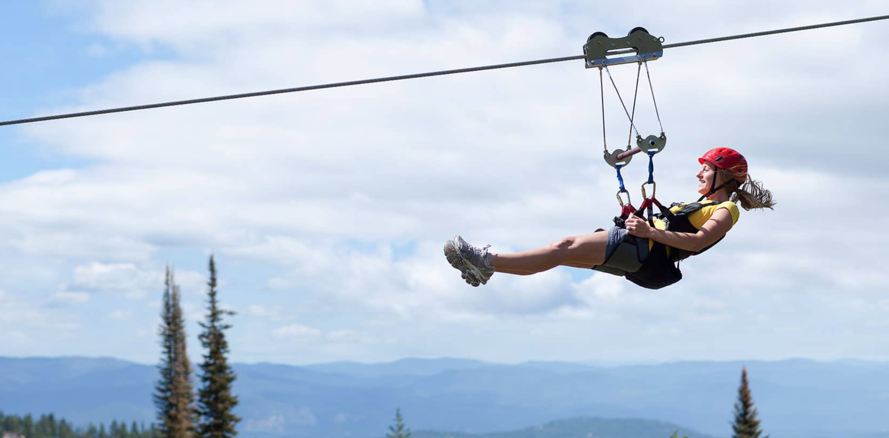

Montana Fun
Welcome to the beautiful state of Montana! This is the beautiful place we call home. We are here to offer you some of the most fun activies Montana has to offer!
Whitewater Rafting

Your journey begins with a beautiful van or bus ride up the river corridor to Spring Bar where you will launch onto one of the most popular rafting stretches of the famous River. You will experience such rapids as Ruby, Lake Creek, Time Zone, Trap, Ladder and more. You will have plenty of time to relax on a white sand beach and swim or play a game of Frisbee while you savor our delicious riverside cuisine. Riggins is Idaho's white water capital is nestled between the Seven Devil Mountains and the Gospel Hump and Frank Church Wilderness area's. The serenity of the canyon and the thrill of the whitewater makes this a fun filled family adventure.
Ziplining
During your tour you will be able to enjoy seven different zip lines. You will see beautiful views from our Scenic Look Out Tower that will take you 80ft off the ground to a 721ft zip line.Our zip line canopy tour is a very interactive experience. Your group will be accompanied by 2 guides during your entire adventure. We look forward to guiding your Zip Line Canopy Tour!